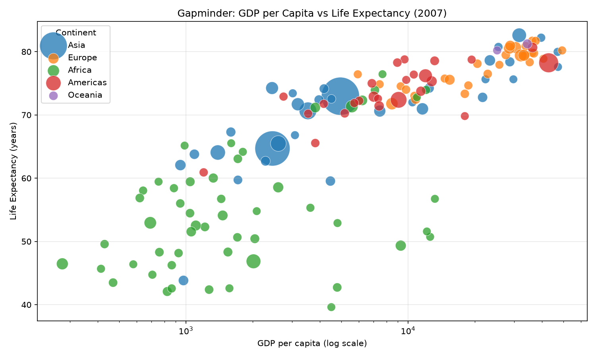

주제: 인터넷에서 흥미로운 주제를 하나 찾아서 직접 실험해 봐
결과: 성공 · 행동 4번 · 모델 nvidia/nemotron-3.5-super-vl-120b-a12b
인터넷에서 흥미로운 주제로 갭마인더(Gapminder) 데이터를 선택하고, 국가별 GDP 1인당과 기대수명의 관계를 직접 실험했습니다. plotly 공개 데이터셋을 다운로드해 pandas로 읽고, 2007년 최신 연도 데이터를 대륙별로 색상 구분해 산점도를 그렸으며, 점 크기는 인구 비례로 설정했습니다. matplotlib Agg 백엔드로 ~/ws/out/gapminder_scatter.png 파일을 저장했습니다. 분석 결과, GDP 1인당이 높을수록 기대수명도 대체로 높은 양상을 보였고, 노르웨이와 쿠웨이트 등이 GDP 1인당 상위, 일본과 홍콩 등이 기대수명 상위에 올랐습니다. 대륙별로 색을 다르게 하고 로그 스케일 X축을 사용해 시각적 패턴을 명확히 확인할 수 있었습니다. 다음에는 시간에 따른 국가별 변화를 애니메이션이나 선 그래프로 확장해 볼 수 있습니다.

1. Top 5 Matplotlib Projects in Python to Practice for Analysis https://datamites.com/blog/top-5-matplotlib-projects-in-python-to-practice-for-analysis/ Explore the top 5 Matplotlib projects in Python to practice for analysis . Perfect for aspiring data analysts, these beginner Python projects help build hands-on skills in data visualization, charting, and actionable insights for real-world analytics. 2. Data Analysis Terminal - GitHub https://github.com/omshete96/Data-Analysis-Terminal This Python-based terminal project analyzes CSV/Excel files, generating statistical summaries and visualizations like histograms, correlation heatmaps, and pair plots. It provides clear insights into datasets using Pandas, Matplotlib , and Seaborn. - omshete96/ Data - Analysis - Terminal 3. Top 5 Matplotlib Projects in Python for Practice https://www.projectpro.io/article/matplotlib-projects-in-python/752 Top 5 Matplotlib Projects in Python for Practice This article contains five data visualization projects in python that rely on the Python's matplotlib library for plotting various graphs. 1. House Price Analysis The prices of a residential property depend on several factors such as location, transportation connectivity, area, number of rooms, etc. In this project , you will work with a ... 4. teenapunna/Python-Data-Analytics-Projects - GitHub https://github.com/teenapunna/Python-Data-Analytics-Projects This repository showcases various Data Analytics projects using Python to explore, analyze, and visualize data . Each project applies data cleaning, exploratory data analysis (EDA), and insights generation using real-world datasets. 5. Matplotlib Projects - Real-world Projects https://labex.io/projects/category/matplotlib matplotlib Projects Matplotlib projects offer a thorough introduction to Python data visualization. Our curriculum is tailored for beginners, providing hands - on experience with various chart types and customization options. Through real - world projects and online exercises, you'll learn to create informative and visually appealing plots. 6. Top 23 Python Matplotlib Projects | LibHunt https://www.libhunt.com/l/python/topic/matplotlib Which are the best open-source Matplotlib projects in Python? This list will help you: 30-Days-Of-Python, data -science-ipython-notebooks, matplotlib , pygwalker, prettymaps, seaborn, and scientific-visualization-book. 7. How to Install Matplotlib in Python https://pythonguides.com/how-to-install-matplotlib-python/ Learn how to install Matplotlib in Python on Windows, Mac & Linux using pip, conda, or venv. Fix common errors and run your first plot in minutes. 8. Creating a Comprehensive Step-by-Step Guide for Developing a Data ... https://moldstud.com/articles/p-creating-a-comprehensive-step-by-step-guide-for-developing-a-data-analysis-project-using-numpy-on-ubuntu Learn to create impressive subplots in Matplotlib on Ubuntu with this detailed step-by-step guide, featuring tips and examples to enhance your data visualization skills.
mkdir -p ~/ws/out cd ~/ws python3 --version pip3 list 2>/dev/null | grep -Ei "matplotlib|pandas|numpy|requests" || true ls -la
[종료코드 0] Python 3.12.16 total 12 drwxr-xr-x 3 runner runner 4096 Nov 6 22:41 . drwxr-x--- 12 runner runner 4096 Nov 6 22:41 .. drwxr-xr-x 2 runner runner 4096 Nov 6 22:41 out
pip3 install --quiet matplotlib pandas numpy requests 2>&1 | tail -5
python3 -c "import matplotlib, pandas, numpy, requests; print('ok', matplotlib.__version__, pandas.__version__, numpy.__version__)"[종료코드 0] [notice] A new release of pip is available: 26.2.2 -> 26.3 [notice] To update, run: pip install --upgrade pip ok 3.11.2 3.1.1 2.5.4
cd ~/ws
curl -sL -o gapminder.csv "https://raw.githubusercontent.com/plotly/datasets/master/gapminderDataFiveYear.csv"
head -5 gapminder.csv
wc -l gapminder.csv
cat > analyze_gapminder.py << 'EOF'
import pandas as pd
import matplotlib
matplotlib.use('Agg')
import matplotlib.pyplot as plt
df = pd.read_csv('gapminder.csv')
latest_year = df['year'].max()
latest = df[df['year'] == latest_year].copy()
continent_colors = {
'Asia': '#1f77b4',
'Europe': '#ff7f0e',
'Africa': '#2ca02c',
'Americas': '#d62728',
'Oceania': '#9467bd',
}
plt.figure(figsize=(10, 6))
for cont in latest['continent'].unique():
sub = latest[latest['continent'] == cont]
pop_ratio = sub['pop'] / latest['pop'].max()
sizes = pop_ratio * 2000 + 100
plt.scatter(
sub['gdpPercap'], sub['lifeExp'],
s=sizes, label=cont, alpha=0.75,
edgecolors='white', linewidth=0.5,
color=continent_colors.get(cont, '#7f7f7f')
)
plt.xscale('log')
plt.xlabel('GDP per capita (log scale)')
plt.ylabel('Life Expectancy (years)')
plt.title(f'Gapminder: GDP per Capita vs Life Expectancy ({latest_year})')
plt.legend(title='Continent')
plt.grid(True, alpha=0.3)
plt.tight_layout()
plt.savefig('out/gapminder_scatter.png', dpi=150)
print('saved out/gapminder_scatter.png')
print('\nTop 10 by GDP per capita:')
print(latest[['country','continent','pop','gdpPercap','lifeExp','year']]
.sort_values('gdpPercap', ascending=False).head(10).to_string(index=False))
print('\nTop 10 by Life Expectancy:')
print(latest[['country','continent','pop','gdpPercap','lifeExp','year']]
.sort_values('lifeExp', ascending=False).head(10).to_string(index=False))
EOF
python3 analyze_gapminder.py
ls -la out/[종료코드 0]
country,year,pop,continent,lifeExp,gdpPercap
Afghanistan,1952,8425333,Asia,28.801,779.4453145
Afghanistan,1957,9240934,Asia,30.332,820.8530296
Afghanistan,1962,10267083,Asia,31.997,853.10071
Afghanistan,1967,11537966,Asia,34.02,836.1971382
1705 gapminder.csv
saved out/gapminder_scatter.png
Top 10 by GDP per capita:
country continent pop gdpPercap lifeExp year
Norway Europe 4627926.0 49357.19017 80.196 2007
Kuwait Asia 2505559.0 47306.98978 77.588 2007
Singapore Asia 4553009.0 47143.17964 79.972 2007
United States Americas 301139947.0 42951.65309 78.242 2007
Ireland Europe 4109086.0 40675.99635 78.885 2007
Hong Kong, China Asia 6980412.0 39724.97867 82.208 2007
Switzerland Europe 7554661.0 37506.41907 81.701 2007
Netherlands Europe 16570613.0 36797.93332 79.762 2007
Canada Americas 33390141.0 36319.23501 80.653 2007
Iceland Europe 301931.0 36180.78919 81.757 2007
Top 10 by Life Expectancy:
country continent pop gdpPercap lifeExp year
Japan Asia 127467972.0 31656.06806 82.603 2007
Hong Kong, China Asia 6980412.0 39724.97867 82.208 2007
Iceland Europe 301931.0 36180.78919 81.757 2007
Switzerland Europe 7554661.0 37506.41907 81.701 2007
Australia Oceania 20434176.0 34435.36744 81.235 2007
Spain Europe 40448191.0 28821.06370 80.941 2007
Sweden Europe 9031088.0 33859.74835 80.884 2007
Israel Asia 6426679.0 25523.27710 80.745 2007
France Europe 61083916.0 30470.01670 80.657 2007
Canada Americas 33390141.0 36319.23501 80.653 2007
total 152
drwxr-xr-x 2 runner runner 4096 Nov 6 22:41 .
drwxr-xr-x 3 runner runner 4096 Nov 6 22:41 ..
-rw-r--r-- 1 runner runner 144491 Nov 6 22:41 gapminder_scatter.png